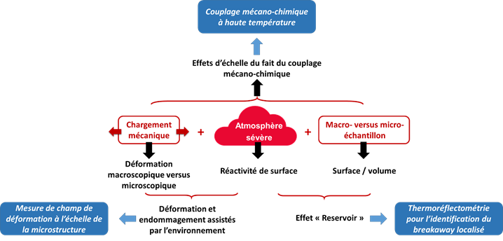

COMPAACT (ANR JCJC AAPG 2018):
Corrosive-Oxidative
coupled Mechanical Performances
of materials Assessed via Advanced Characterization
Tools
Présentation
:
Les
problématiques d'endommagements précoces liés à l'oxydation/corrosion sous
contrainte sont largement rencontrées dans l'Industrie, notamment pour des
applications à haute température (650ºC-1100ºC) en environnements sévères. COMPAACT
est un projet fondamental et expérimental abordant l'influence des couplages
multi-physiques sur les propriétés surfaciques et sous-surfaciques de matériaux
évolutifs dans le temps. COMPAACT propose d'aborder la dimension
multi-physique complexe de l'évaluation des déformations et des dommages
assistées par l'environnement en développant un banc d'essai mécanique in-situ
innovant et polyvalent. Ce banc prototype sera capable de corréler
simultanément la déformation macroscopique/mesoscopique et sub-microstructure/sub-micrométrique
et les changements de réactivité de surface (microfissuration des oxydes,
spallation des oxydes, oxydes à croissance rapide, oxydation de rupture, etc).
Le principal objectif de ce développement expérimental
in-situ est d'apporter une nouvelle compréhension et une prédiction plus
physique du comportement mécanique local et évolutif des matériaux à
gradient de propriétés/microstructure en relation avec les interactions
environnementales.
La combinaison de
moyens de caractérisation technologique avancés, i.e., la thermoréflectométrie
et la photomécanique aux petites échelles à haute température, apporte
une dimension originale et justifie la nécessité de tels développements
expérimentaux. La thermoréflectométrie vise l'inspection in-situ
de la réactivité locale de la surface due à la modification de
l'émissivité liée à la croissance de nouveaux oxydes, à la fissuration et/ou à
la spallation des oxydes, etc. La photomécanique vise quant à elle une
caractérisation par mesure de champs de la déformation des matériaux à
l'échelle de la microstructure.
En outre, l'emplois
d'échantillons ultraminces, i.e., à fort rapport surface/volume, permet
d'amplifier la contribution de l'environnement sur le comportement mécanique et
le comportement aux dommages des matériaux. L'emploi d'échantillons à volume
limité permet aussi d'activer des dégradations spécifiques dues à l'effet
réservoir due fait de l'oxydation sélective de certains éléments d'alliage. Les
effets de taille seront abordés autant d'un point de vue mécanique que chimique
afin d'étudier le couplage mécano-chimique nécessaire à la description du
breakaway localisé.

Illustration schématique des actions menées dans le cadre du projet COMPAACT
L'équipe :
COMPAACT est coordonné par Damien TEXIER, chargé de recherche CNRS au sein
de l'Institut Clément Ader (ICA) � UMR CNRS 5312. L'équipe est constituée d'un chercheur, d'enseignants-chercheurs,
d'ingénieurs de recherche, d'un post-doctorant, de doctorants et de stagiaires issues
de l'ICA. Ce consortium réunit des experts de différentes thématiques de
recherche gravitant autour des analyses de comportement mécanique, de
réactivité de surface, de métrologie haute température et de spectroscopie afin
d'aborder les aspects pluri- et transversaux de COMPAACT. Les
membres de l'équipe sont détaillés ci-dessous :
|
NOM |
Prénom |
Statut |
|
Doctorant (et stagiaire) |
||
|
ALET |
Julian |
Stagiaire |
|
MARIE |
Clara |
Stagiaire |
Les résultats :
-
Le Jig de polissage est
conçu, fabriqué, calibré et testé !
-
Préparation
d'échantillons ultraminces centimétriques (jusqu'à 10 µm d'épaisseur avec
une variation d'épaisseur de +/-1µm).
-
Essais micromécaniques à
température ambiante è effet de surface libre/effet de volume.
-
Conception de l'enceinte
haute température sous atmosphère contrôlée.
-
Sélection et validation
de l'instrumentation pour la photomécanique à l'échelle microscopique à haute
température.
-
Essais d'oxydation à
haute température sur éprouvettes minces è breakaway précoce (dizaines d'heures) sur un
matériau initialement alumino-formeur.
-
Mise en place de la
thermoréflectométrie à haute température.
Publications et présentations :
[1] Texier, D., Copin, E., et al. High temperature oxidation of NiCrAlY coated Alloy 625 manufactured by selective laser melting. Surf Coat Technol (2020), in press
[2] Texier, D., Cadet, C., Straub, T. et al. Tensile Behavior of Air Plasma Spray MCrAlY Coatings: Role of High Temperature Agings and Process Defects. Metall and Mat Trans A 51, 2766-2777 (2020). https://doi.org/10.1007/s11661-020-05722-3
[3] Cadet, C., Straub, T. Texier, D. et al. Tensile behavior of air plasma spray MCrAlY coatings: Role of high temperature aging and process defect, in: ICMCTF 2019, poster à une conference internationale (2018) San Diego (USA)
[4] Texier, D. et al. Essais micromécanique pour des
caractérisations mésoscopiques
et essais macromécanique pour des caractérisations microscopiques à haute
températures, in : Séminaire invité LSPM (2019) Paris (France)
[5] Texier, D. La micromécanique haute température pour le couplage
"oxidation-diffusion-mécanique" in : Séminaire invité GdR COnCOrD (2019)
Compiègne (France)
[6] Javaudin, B., Ecochard, M., Gilblas, R. et al. Suivi in-situ de
l'oxydation d'un rev$ecirc;tement MCrAlY par thermoréflectométrie proche infrarouge
in : Poster conférence nationale SFT (2019) Nantes (France)
[7] Texier, D., Sirvin, Q. Velay, V. et al. Oxygen/nitrogen-assisted degradation of the mechanical behavior of titanium alloys exposed at elevated temperature, in: Titanium 2018, présentation à une conference internationale (2019) Nantes (France)